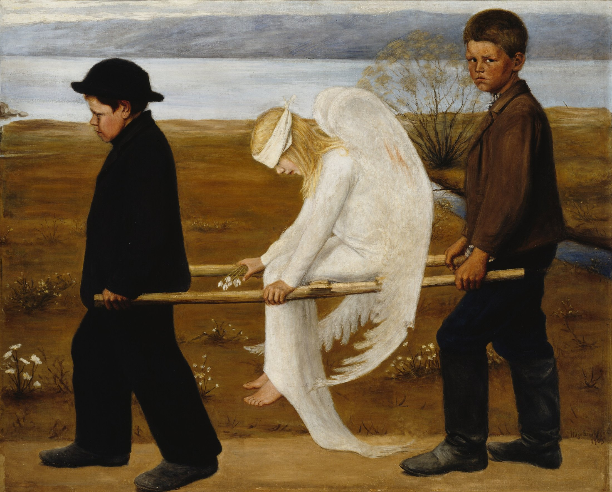

Stretcher and horizon bind the figures into a right-to-left sequence. Their heads read low—lower—high: bowed boy, sinking angel, backward gaze. That last face pins movement to the viewer.
Peat brown and mist blue make a muted cool–warm contrast. Charcoal adds gravity; bandage white becomes the highest-value focus. Wound ochre stays under 5%, yet simultaneous contrast makes it acute.
Sky, lake, and earth flatten into broad bands; faces, hands, poles, and feathers sharpen. A dry, matte surface strips myth of spectacle, turning it into an event someone happened to see.
Fact: 1903, oil on canvas, 127 × 154 cm, A II 1703. Simberg was a central Finnish Symbolist. At the first exhibition he offered only a long dash as the title, leaving interpretation to viewers.
Interpretation: The children may not understand what happened, yet they lift. The angel has not healed; the road has no visible end. One boy's gaze turns looking into responsibility.
Hugo Simberg, The Wounded Angel, 1903, oil on canvas; Finnish National Gallery / Ateneum Art Museum, Ahlström Collection, A II 1703. Digital reproduction from the collection; photograph by Hannu Aaltonen. Finna marks usage rights as CC0. Image rights belong to the original creator and relevant rights holders; verify across jurisdictions. Analysis by Daily Art.